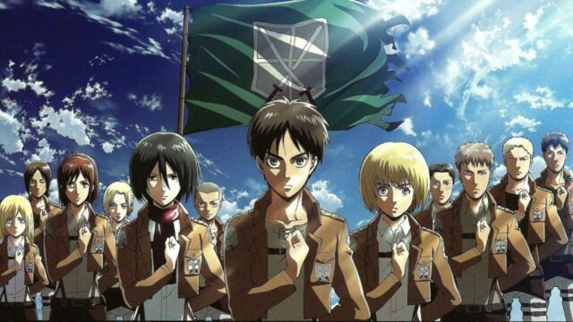
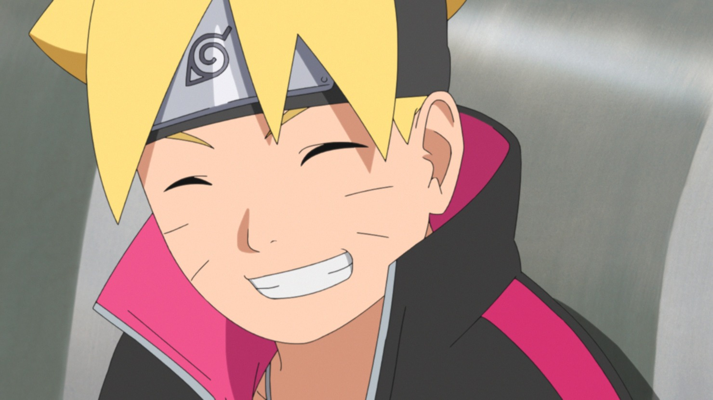
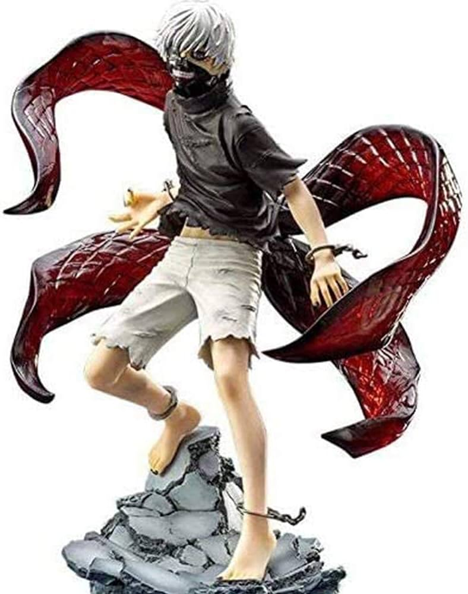

Attention: Cette page peut contenir des spoilers. Viewer discretion is advised.
Attaque des Titans

Le récit raconte le combat mené par l'humanité pour reconquérir son territoire, en éclaircissant les mystères liés à l'apparition des Titans, du monde extérieur ...
Dans l'univers de la série, Naruto est un jeune ninja du village de Konoha. Hôte du démon renard à neuf queues, une créature qui a attaqué le village par le passé, il est rejeté par les autres villageois. Son ambition est de devenir Hokage, le chef du village, afin de gagner le respect des habitants.
Boruto

Boruto est le fils de Naruto Uzumaki, le septième Hokage du village de Konoha, et célèbre ninja. Ayant toujours vécu dans l'ombre de son père, le garçon est décidé à le surpasser. Mais son entrée à l'académie des ninjas de Konoha va lui apprendre que devenir le meilleur ninja est plus difficile qu'il ne l'aurait cru.
Death Note
Light Yagami, un jeune étudiant surdoué, ramasse un jour le "Death Note", un carnet abandonné par un dieu de la mort, Ryuk, qui apparemment s'ennuyait dans son monde. Il suffit d'écrire le nom d'une personne dans ce carnet, et celle-ci meurt.
Tokyo Ghoul

À Tokyo, sévissent des goules, monstres cannibales se dissimulant parmi les humains pour mieux s'en nourrir. Étudiant timide, Ken Kaneki est plus intéressé par la jolie fille qui partage ses goûts pour la lecture que par ces affaires sordides, jusqu'au jour où il se fait attaquer par l'une de ces fameuses créatures.
One Piece
One Piece raconte les aventures d'une bande de pirates, menée par le capitaine Monkey D. Luffy (qui a pour ambition de devenir le roi des pirates) et lancée à la recherche du trésor, nommé One Piece, du légendaire roi des pirates Gold Roger, mort sans avoir révélé l'emplacement de son butin.